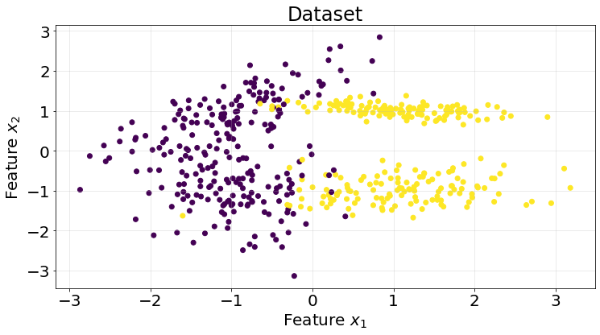
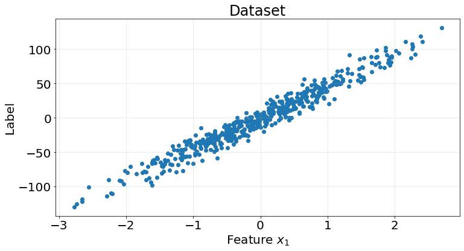
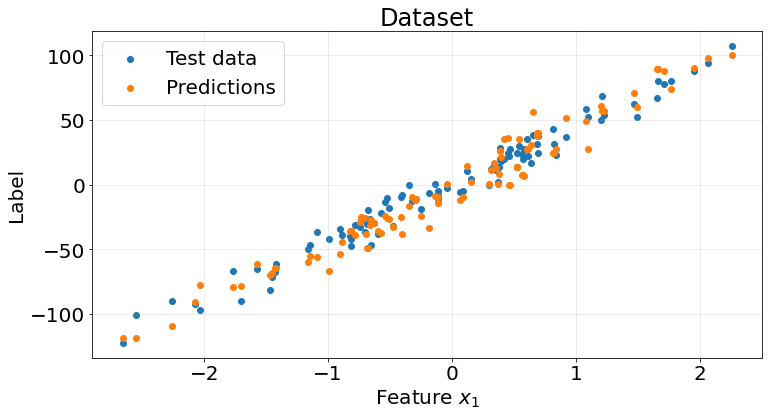

import numpy as np
import matplotlib.pyplot as plt
from sklearn.datasets import make_classification, make_regression
from sklearn.model_selection import KFold
from sklearn.metrics import roc_auc_score, r2_score
from sklearn.base import RegressorMixin, ClassifierMixin
from scipy.stats import modeNotes for myself about decision trees and how to implement them from scratch.
1. Introduction
Decision trees are a non-parametric supervised machine learning algorithm. They can be used both for classification and for regression tasks. Decision trees are essentially a data structure that represents a given set of data: each node of the tree represents a particular partition of the dataset, further categorizing the samples into subtrees until some convergence metric is met.
1.1. Fitting decision trees
As previously stated, decision trees split the data in a way that some metric must be optimized. The question that arises now is “How do we find the best possible split?”.
Decision trees work by evaluating all possible splits (feature splits and point splits) and selecting the best according to a metric. For classification, we want the nodes to be as “pure” as possible. Here, the term “pure” means having a node completely composed of data that belongs to the same class.
In classification problems, information gain, computed either Gini or Entropy, is used. In regression, Mean Squeared Error is a good metric to use.
1.1.1. Information gain
Using Gini impurity or entropy alone would only measure the impurity of the current state of the data. This doesn’t tell us whether splitting on a particular feature is beneficial. To decide which feature to split on, we must evaluate how much improvement (reduction in impurity) a split provides. This improvement is quantified by information gain.
Information gain is the amount of information gained about a random variable or signal from observing another random variable. It tells us how important a given attribute of the feature vectors is. It is defined as
\[ IG = I(\text{parent}) - \sum_{i=1}^{k} \dfrac{N_i}{N} I(\text{child}_{i}). \]
- \(I\) is the impurity metric: entropy or gini
parentis the parent node.childis the child node.- \(N\) is the total number of samples on the
parentnode. - \(N_{i}\) is the number of samples in the \(i\)-th child node.
1.1.2. Gini impurity index
Gini measures how often a randomly chosen element of a set would be incorrectly labeled if it were labeled randomly and independently according to the distribution of labels in the set.
\[ I_{G} = 1 - \sum_{i=1}^{n} p_{i}^2, \]
where \(p_{i}\) is the probability of the class \(i\) in the dataset.
1.1.3. Entropy
Entropy is a measure somewhat contrary to probability. An event with 100% change of occurring would have entropy 0, since it does not add any information. It is “expected”. An event with 0% chance of occurring would have infinite entropy, since it is completely “unexpected”.
\[ I_{H} = -\sum_{i=1}^{n} p_{i} \cdot log(p_{i}), \]
where \(p_{i}\) is the probability of the class \(i\) in the dataset.
1.2. Recursive splitting
After selecting a metric we must generate all possible splits for each feature. We can traverse all the features in the matrix \(X\) of independent variables and sort each column. We then compute the middlepoint between any two adjacent values to obtain the split thesholds (we can also traverse the column directly).
For each threshold we compute the information gain and select the best split. The process is repeated recursively until a stopping criterio is met.
1.3. Regression trees
If we want to generate a tree for regression tasks we
2. Code
We first develop the code that implements Gini and Entropy formulas, for which we need a helper function to compute the class probability.
def get_class_probabilities(array):
"""Compute class probabilities.
The probability is computed by counting the number of favorable outcomes
divided by the numberr of outcomes.
Parameters
----------
array : numpy.ndarray
Array containing the labels.
Returns
-------
probabilities : numpy.ndarray
Array containing probabilities for each class.
"""
_, label_counts = np.unique(array, return_counts=True)
probabilities = label_counts / label_counts.sum()
return probabilities
def gini_impurity_index(array):
probabilities = get_class_probabilities(array)
gini = 1 - (probabilities ** 2).sum()
return gini
def entropy(array):
probabilities = get_class_probabilities(array)
h = (-probabilities * np.log(probabilities)).sum()
return hNotice that both metrics penalize heterogeneity
het = np.array([1, 0])
hom = np.array([1, 1])For a sequence composed of different numbers the gini and entropy are greater that for squences composed of the same number.
gini_impurity_index(het), gini_impurity_index(hom)(0.5, 0.0)entropy(het), entropy(hom)(0.6931471805599453, 0.0)We also need an extra helper function to compute the middle points between all adjacent values of a given array:
def get_avg_between_adjacent_values(array):
"""Get adjacent values.
Computes the adjacent values of any 2 adjacent values of the array. See
example section for clarification
Parameters
----------
array : numpy.ndarray
Array to get middle points from.
Returns
-------
middle_points : numpy.ndarray
Middle points between all adjacent values of the array.
Example
-------
>>> import numpy as np
>>> vals = np.array([1, 2, 5, 9])
>>> get_adjacent_values(vals)
array([1.5, 3.5, 7. ])
"""
roll = np.roll(array, shift=1)
middle_poins = roll + (array - roll) / 2
# we aren't interested in computing the middle point between last and first
middle_poins = middle_poins[1:]
return middle_poinsAs with previous posts, the code structure follows the Scikit-Learn API convention of Fit-Predict. There is a Node class that registers split information and a base tree class that is laterr extended to create classification and regression trees.
class Node:
"""Decision tree class.
Parameters
----------
split_threshold : float, optional, default=None
feature_name : str, optional, default=None
left_child : Node, optional, default=None
right_child : Node, optional, default=None
is_leaf : bool, optional, default=None
node_value : float, optional, default=None
"""
__slots__ = [
"split_threshold",
"feature_name",
"is_leaf",
"left_child",
"right_child",
"node_value"
]
def __init__(
self,
split_threshold=None,
feature_name=None,
left_child=None,
right_child=None,
is_leaf=None,
node_value=None,
):
self.split_threshold = split_threshold
self.feature_name = feature_name
self.is_leaf = is_leaf
self.left_child = left_child
self.right_child = right_child
self.node_value = node_valueclass DecisionTreeBase:
"""Decision tree base class.
To build a decision tree, both for regression and classification, this
class must be extended.
Parameters
----------
criterion_function : callable
Criterion function used to evaluate a split.
is_classifier : bool
True for classification trees. False otherwise.
min_samples_per_split : int, optional, default=2
Minimum number of samples per split.
max_depth : int, optional, default=100
Maximum tree depth.
"""
def __init__(
self,
criterion_function,
is_classifier,
min_samples_per_split=2,
max_depth=100,
):
self.criterion_function = criterion_function
self.is_classifier = is_classifier
self.min_samples_per_split = min_samples_per_split
self.max_depth = max_depth
self.tree = None
def fit(self, X, y):
"""Build a decision tree classifier from the training set (X, y).
Parameters
----------
X : numpy.ndarray
Matrix of features.
y : numpy.ndarray
The target values.
"""
tree = self.build_tree(X, y)
self.tree = tree
def predict(self, X):
"""Predict class or regression value for X.
Parameters
----------
X : numpy.ndarray
Input samples.
Returns
-------
y : numpy.ndarray
Predictions for the given samples.
"""
return np.array([self.traverse_tree(x, self.tree) for x in X]).flatten()
def traverse_tree(self, x, node: Node):
if node.node_value is not None:
return node.node_value
if x[node.feature_name] <= node.split_threshold:
return self.traverse_tree(x, node.left_child)
return self.traverse_tree(x, node.right_child)
def build_tree(self, X, y, depth=0):
"""Build a tree by recursively splitting on different thresholds and
features.
Parameters
----------
X : numpy.ndarray
Matrix of features.
y : numpy.ndarray
The target values.
depth : int, optional, default=0
Depth of the tree.
Returns
-------
Node
Root node.
"""
n_samples, n_features = X.shape
# check if we have reached any stopping criteria
depth_crit = depth >= self.max_depth
min_samples_crit = n_samples < self.min_samples_per_split
n_labels_cond = len(np.unique(y)) == 1
if depth_crit or min_samples_crit or n_labels_cond:
val = self.get_node_value(y)
return Node(is_leaf=True, node_value=val)
# define initial values for the threhold and feature
best_gain = -1
best_feat_col = None
best_split_th = None
for int_feat_col in range(n_features):
col_i = X[:, int_feat_col]
# sort values and compute split thresholds
sorted_col_i = np.sort(col_i)
split_thresholds = np.unique(
get_avg_between_adjacent_values(sorted_col_i)
)
# now we traverse each split and select the best one
for split_th in split_thresholds:
# perform the split based on the threshold
left_idx, right_idx = self.split(X[:, int_feat_col], split_th)
if len(left_idx) == 0 or len(right_idx) == 0:
continue
# compute information gain
if self.is_classifier:
gain = self.information_gain(y, y[left_idx], y[right_idx])
else:
gain = self.variance_reduction(y, y[left_idx], y[right_idx])
if gain > best_gain:
best_gain = gain
best_split_th = split_th
best_feat_col = int_feat_col
if best_gain == -1:
leaf = self.get_node_value(y)
return Node(node_value=leaf)
# create subtrees
left_idx, right_idx = self.split(X[:, best_feat_col], best_split_th)
# recursively evaluate the subtrees
left_subtree = self.build_tree(X[left_idx, :], y[left_idx], depth + 1)
right_subtree = self.build_tree(X[right_idx, :], y[right_idx], depth + 1)
return Node(
feature_name=best_feat_col,
split_threshold=best_split_th,
left_child=left_subtree,
right_child=right_subtree,
)
def split(self, feature_column, threshold):
left_idx = np.where(feature_column <= threshold)[0]
right_idx = np.where(feature_column > threshold)[0]
return left_idx, right_idx
def information_gain(self, parent, left, right):
criterion_function = self.criterion_function
weight_left = len(left) / len(parent)
weight_right = len(right) / len(parent)
info_gain = criterion_function(parent) - (
weight_left * criterion_function(left) +
weight_right * criterion_function(right)
)
return info_gain
def variance_reduction(self, parent, left, right):
criterion_function = self.criterion_function
weight_left = len(left) / len(parent)
weight_right = len(right) / len(parent)
return np.var(parent) - (weight_left * np.var(left) + weight_right * np.var(right))
def get_node_value(self, array):
raise NotImplementedError("Subclasses must override this method")2.1. Classification trees
Classification trees use the information gain on gini or entropy to compute the impurity. The mode function is usually used to get the most common label.
class DecisionTreeClassifier(DecisionTreeBase, ClassifierMixin):
"""Decision tree classifier.
Parameters
----------
criterion : {“gini”, “entropy”}, default="gini"
Criterion used to compute the information gain.
min_samples_per_split : int, optional, default=2
Minimum samples per split.
max_depth : int, optioanl, default=100
Maximum depth of the tree.
"""
def __init__(
self, criterion="gini", min_samples_per_split=2, max_depth=100
):
if criterion == "gini":
criterion_function = gini_impurity_index
elif criterion == "entropy":
criterion_function = entropy
else:
raise ValueError(f"Unsupported criterion function: {criterion}")
super().__init__(
criterion_function=criterion_function,
min_samples_per_split=min_samples_per_split,
max_depth=max_depth,
is_classifier=True
)
def get_node_value(self, array):
return mode(array).modeX, y = make_classification(n_samples=500, n_features=2, n_informative=2, n_redundant=0, n_classes=2, random_state=10)
fig, ax = plt.subplots(1, 1, figsize=(12, 6))
ax.scatter(X[:, 0], X[:, 1], c=y)
ax.grid(True, alpha=.3)
ax.set_title("Dataset", fontsize=24)
ax.set_xlabel("Feature $x_{1}$", fontsize=20)
ax.set_ylabel("Feature $x_{2}$", fontsize=20)
ax.tick_params(labelsize=20)
kf = KFold(n_splits=5)
roc_scores = []
for train_idx, test_idx in kf.split(X):
model = DecisionTreeClassifier(criterion="entropy")
X_train = X[train_idx]
y_train = y[train_idx]
X_test = X[test_idx]
y_test = y[test_idx]
model.fit(X_train, y_train)
y_pred = model.predict(X_test)
score = roc_auc_score(y_true=y_test, y_score=y_pred)
roc_scores.append(score)We achieve a really good area under the curve for this particular synthetic dataset.
np.array(roc_scores).mean()0.94608052621321872.2. Regression trees
class DecisionTreeRegressor(DecisionTreeBase, RegressorMixin):
"""Decision tree regressor.
Parameters
----------
criterion : {squared_error, “entropy”}, default="gini"
Criterion used to compute the information gain.
min_samples_per_split : int, optional, default=2
Minimum samples per split.
max_depth : int, optioanl, default=100
Maximum depth of the tree.
"""
def __init__(
self,
criterion="squared_error",
min_samples_per_split=2,
max_depth=100
):
if criterion == "squared_error":
criterion_function = lambda x,y: ((x - y) ** 2).mean()
else:
raise ValueError(f"Unsupported criterion function: {criterion}")
super().__init__(
criterion_function=criterion_function,
min_samples_per_split=min_samples_per_split,
max_depth=max_depth,
is_classifier=False
)
def get_node_value(self, array):
return np.mean(array)X, y = make_regression(n_samples=500, n_features=1, n_informative=1, n_targets=1, noise=10, random_state=0)
fig, ax = plt.subplots(1, 1, figsize=(12, 6))
ax.scatter(X, y)
ax.grid(True, alpha=.3)
ax.set_title("Dataset", fontsize=24)
ax.set_xlabel("Feature $x_{1}$", fontsize=20)
ax.set_ylabel("Label", fontsize=20)
ax.tick_params(labelsize=20)
kf = KFold(n_splits=5)
r2_scores = []
for train_idx, test_idx in kf.split(X):
model = DecisionTreeRegressor()
X_train = X[train_idx]
y_train = y[train_idx]
X_test = X[test_idx]
y_test = y[test_idx]
model.fit(X_train, y_train)
y_pred = model.predict(X_test)
score = r2_score(y_true=y_test, y_pred=y_pred)
r2_scores.append(score)R2 score is very good considering the synthetic generated toy dataset.
np.array(r2_scores).mean()0.9075705029040689fig, ax = plt.subplots(1, 1, figsize=(12, 6))
ax.scatter(X_test, y_test)
ax.scatter(X_test, y_pred)
ax.grid(True, alpha=.3)
ax.legend(["Test data", "Predictions"], fontsize=20)
ax.set_title("Dataset", fontsize=24)
ax.set_xlabel("Feature $x_{1}$", fontsize=20)
ax.set_ylabel("Label", fontsize=20)
ax.tick_params(labelsize=20)
3. Strengths and Weaknesses
A summary of strenghts and weaknesses of this model.
Pros
- Easy to interpret.
- Robust to outliers.
- Can deal by default with non-linear.
Cons
- Can overfit easily to the data.
- High variance model.
- Computationally expensive by its recursive nature.